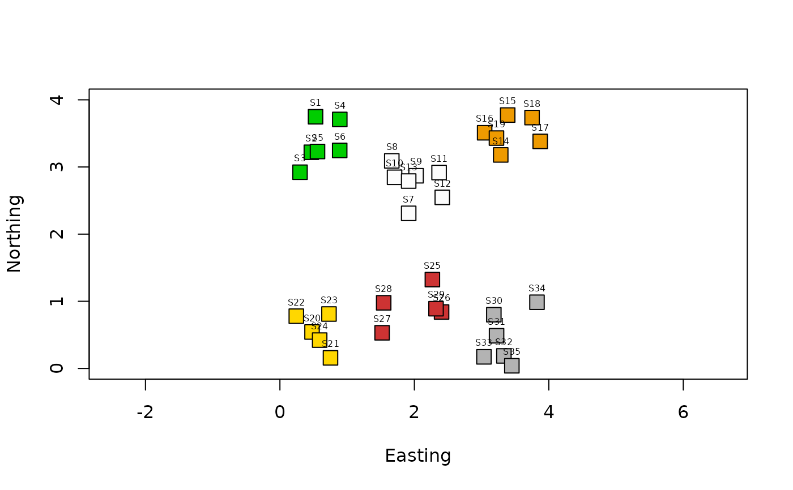

R/create.dbMEM.model.R
create.dbMEM.model.RdThis function reads a file containing the Cartesian coordinates of
sites forming different groups on the map, and constructs a combined staggered matrix
of dbMEM spatial eigenvectors, ready for use in RDA.
The method was first described and used in Declerck et al. (2011) and summarized in
the Borcard et al. (2011) book, section 7.4.3.5. These publications provided
preliminary versions of the present function. The present version is more completely
documented. Furthermore, it uses the dbmem function of the
adespatial package for computation of the eigenfunctions.
create.dbMEM.model(coord = NULL, D.mat = NULL, nsites)
| coord | Optional file containing the Cartesian coordinates of the sites. |
|---|---|
| D.mat | Optional distance matrix provided by user, class |
| nsites | A vector containing the number of sites per group. |
A matrix with n rows containing a set of k staggered matrices of
dbMEM eigenfunctions in its diagonal portion; n is the total number of sites
in the study and k is the number of groups. Each small matrix contains
the dbMEM functions, modelling positive spatial correlation, describing the spatial
relationships among the sites of a group. The remainder of the matrix is filled with
zeros. Zero is the mean value of all eigenfunctions describing within-group
relationships. This means that during the calculation of RDA, the sites of a focus
group will have, with each other, relationships described by the dbMEM eigenfunctions
of that group, whereas the sites outside that group will have weights of 0 in the
regressions that concern these eigenfunctions.
The geographic positions of the sites are provided either in a file of geographic
coordinates coord or as a geographic distance matrix D.mat.
The sites must, of course, be in the same order in file coord (or in file
D.mat) and in the response data file used in the RDA. All sites of a group must
be together in these two files, i.e. not interspersed. The numbers of sites in the
groups are provided in vector nsites. See example.
File vector coord, if provided, must contain Cartesian coordinates of the sites,
not coordinates in degrees. The Euclidean distance computed from the geographic
coordinates is a meaningful representation of the geographic relationships only if the
coordinates are Cartesian. Geodetic Cartesian coordinates can be derived from Lat-Lon
data in degrees using the function geoXY of the SoDA package. Beware of
UTM coordinates if the sites are not all located in the same UTM zone; UTM coordinates
are Cartesian only within an UTM zone. See
https://en.wikipedia.org/wiki/Universal_Transverse_Mercator_coordinate_system.
Borcard, D., F. Gillet and P. Legendre. 2011. Numerical ecology with R. Use R! series, Springer Science, New York.
Declerck, S. A. J., J. S. Coronel, P. Legendre & L. Brendonck. 2011. Scale dependency of processes structuring metacommunities of cladocerans in temporary pools of High-Andes wetlands. Ecography 34: 296-305.
Pierre Legendre pierre.legendre@umontreal.ca, 2010. Adaptation to adespatial: Daniel Borcard and Pierre Legendre, 2016
{ # Generate random coordinates for 35 sites forming 6 distinct groups on the map Easting <- runif(35)+c(rep(0,6),rep(1.5,7),rep(3,6), rep(0,5),rep(1.5,5),rep(3,6)) Northing<- runif(35)+c(rep(2.8,6),rep(2.3,7),rep(2.8,6), rep(0,5),rep(0.5,5),rep(0,6)) cartesian <- cbind(Easting,Northing) rownames(cartesian) <- paste("S",1:nrow(cartesian),sep='') nsites.per.group <- c(6,7,6,5,5,6) result <- create.dbMEM.model(coord=cartesian, nsites=nsites.per.group) # Draw a map to check the coding of the sites into the groups site.codes <- unlist(apply(cbind(1:6),1,n=nsites.per.group,function(a,n) rep(a,n[a]))) col.vec <- c("green3","gray99","orange2","gold1","brown3","gray70") plot(cartesian, pch=22, col="black", bg=col.vec[site.codes], cex=2, ylim=c(0,4),asp=1) text(cartesian,labels=rownames(cartesian), cex=0.5, pos=3) # Examine the staggered matrix of dbMEM eigenfunctions # Not run: result }#> dbMEM.1 dbMEM.2 dbMEM.3 dbMEM.4 dbMEM.5 dbMEM.6 #> S1 1.32901379 1.0852980 0.0000000 0.0000000 0.0000000 0.0000000 #> S2 -0.90398444 -0.1517408 0.0000000 0.0000000 0.0000000 0.0000000 #> S3 -0.89910191 1.3310422 0.0000000 0.0000000 0.0000000 0.0000000 #> S4 1.34157518 -0.3794479 0.0000000 0.0000000 0.0000000 0.0000000 #> S5 -0.89853398 -0.1987509 0.0000000 0.0000000 0.0000000 0.0000000 #> S6 0.03103135 -1.6864007 0.0000000 0.0000000 0.0000000 0.0000000 #> S7 0.00000000 0.0000000 0.2873794 2.2130129 0.0000000 0.0000000 #> S8 0.00000000 0.0000000 -1.0772543 -0.3863427 0.0000000 0.0000000 #> S9 0.00000000 0.0000000 -0.5276669 -0.8426107 0.0000000 0.0000000 #> S10 0.00000000 0.0000000 -1.0881046 -0.3864892 0.0000000 0.0000000 #> S11 0.00000000 0.0000000 1.2018422 -0.6878058 0.0000000 0.0000000 #> S12 0.00000000 0.0000000 1.6328083 -0.5102193 0.0000000 0.0000000 #> S13 0.00000000 0.0000000 -0.4290042 0.6004547 0.0000000 0.0000000 #> S14 0.00000000 0.0000000 0.0000000 0.0000000 -0.8455539 -0.6359868 #> S15 0.00000000 0.0000000 0.0000000 0.0000000 0.2876765 1.8166640 #> S16 0.00000000 0.0000000 0.0000000 0.0000000 -0.8579841 -0.5939075 #> S17 0.00000000 0.0000000 0.0000000 0.0000000 1.2014985 -1.2987077 #> S18 0.00000000 0.0000000 0.0000000 0.0000000 1.3318386 0.3209196 #> S19 0.00000000 0.0000000 0.0000000 0.0000000 -1.1174755 0.3910184 #> S20 0.00000000 0.0000000 0.0000000 0.0000000 0.0000000 0.0000000 #> S21 0.00000000 0.0000000 0.0000000 0.0000000 0.0000000 0.0000000 #> S22 0.00000000 0.0000000 0.0000000 0.0000000 0.0000000 0.0000000 #> S23 0.00000000 0.0000000 0.0000000 0.0000000 0.0000000 0.0000000 #> S24 0.00000000 0.0000000 0.0000000 0.0000000 0.0000000 0.0000000 #> S25 0.00000000 0.0000000 0.0000000 0.0000000 0.0000000 0.0000000 #> S26 0.00000000 0.0000000 0.0000000 0.0000000 0.0000000 0.0000000 #> S27 0.00000000 0.0000000 0.0000000 0.0000000 0.0000000 0.0000000 #> S28 0.00000000 0.0000000 0.0000000 0.0000000 0.0000000 0.0000000 #> S29 0.00000000 0.0000000 0.0000000 0.0000000 0.0000000 0.0000000 #> S30 0.00000000 0.0000000 0.0000000 0.0000000 0.0000000 0.0000000 #> S31 0.00000000 0.0000000 0.0000000 0.0000000 0.0000000 0.0000000 #> S32 0.00000000 0.0000000 0.0000000 0.0000000 0.0000000 0.0000000 #> S33 0.00000000 0.0000000 0.0000000 0.0000000 0.0000000 0.0000000 #> S34 0.00000000 0.0000000 0.0000000 0.0000000 0.0000000 0.0000000 #> S35 0.00000000 0.0000000 0.0000000 0.0000000 0.0000000 0.0000000 #> dbMEM.7 dbMEM.8 dbMEM.9 dbMEM.10 #> S1 0.0000000 0.0000000000 0.0000000 0.0000000 #> S2 0.0000000 0.0000000000 0.0000000 0.0000000 #> S3 0.0000000 0.0000000000 0.0000000 0.0000000 #> S4 0.0000000 0.0000000000 0.0000000 0.0000000 #> S5 0.0000000 0.0000000000 0.0000000 0.0000000 #> S6 0.0000000 0.0000000000 0.0000000 0.0000000 #> S7 0.0000000 0.0000000000 0.0000000 0.0000000 #> S8 0.0000000 0.0000000000 0.0000000 0.0000000 #> S9 0.0000000 0.0000000000 0.0000000 0.0000000 #> S10 0.0000000 0.0000000000 0.0000000 0.0000000 #> S11 0.0000000 0.0000000000 0.0000000 0.0000000 #> S12 0.0000000 0.0000000000 0.0000000 0.0000000 #> S13 0.0000000 0.0000000000 0.0000000 0.0000000 #> S14 0.0000000 0.0000000000 0.0000000 0.0000000 #> S15 0.0000000 0.0000000000 0.0000000 0.0000000 #> S16 0.0000000 0.0000000000 0.0000000 0.0000000 #> S17 0.0000000 0.0000000000 0.0000000 0.0000000 #> S18 0.0000000 0.0000000000 0.0000000 0.0000000 #> S19 0.0000000 0.0000000000 0.0000000 0.0000000 #> S20 -0.7336169 0.0101697203 0.0000000 0.0000000 #> S21 1.4279562 -0.0004680646 0.0000000 0.0000000 #> S22 -0.8513169 1.5712058475 0.0000000 0.0000000 #> S23 -0.8395760 -1.5909455616 0.0000000 0.0000000 #> S24 0.9965536 0.0100380584 0.0000000 0.0000000 #> S25 0.0000000 0.0000000000 -0.9613424 0.0000000 #> S26 0.0000000 0.0000000000 -0.9656062 0.0000000 #> S27 0.0000000 0.0000000000 1.3105440 0.0000000 #> S28 0.0000000 0.0000000000 1.0943074 0.0000000 #> S29 0.0000000 0.0000000000 -0.4779028 0.0000000 #> S30 0.0000000 0.0000000000 0.0000000 -0.9088247 #> S31 0.0000000 0.0000000000 0.0000000 0.5366064 #> S32 0.0000000 0.0000000000 0.0000000 0.5752916 #> S33 0.0000000 0.0000000000 0.0000000 0.5633614 #> S34 0.0000000 0.0000000000 0.0000000 -1.7875043 #> S35 0.0000000 0.0000000000 0.0000000 1.0210697